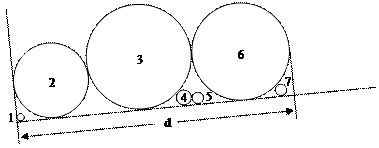

Suppose you launch a set of cylinders, with different radius, over a hill, in such a way they get stacked like in the figure.
Accordingly to the radius of the cylinders, only a subset will be connected forming a continuous path. In the example represented, this path is composed by cylinders 2, 3 and 6. Cylinder 2 is the path head and cylinder 6 is the path tail.
The enclosing distance d is measured from the left support point of the path head until the right point of the path tail.

Example of a stack of cylinders.
Problem
Given a sequence of cylinders, this problem consists in the evaluation of the enclosing distance and the sequence of cylinders that compose the continuous path. It is ensured that each cylinder can touch no more than one cylinder at its left and no more than one cylinder at its right.
Input
The input will contain several test cases, each of them as described below.
Consecutive test cases are separated by a single blank line.
The input is a sequence of text lines, as follows.
The first text line contains the number NC (integer format) of cylinders. It is followed by a sequence of NC text lines containing, each line, a cylinder radius (integer or decimal format). The cylinder identifier is obtained from its series number in the sequence (starting at 1).
Note: the maximum number of cylinders is 100.
Output
For each test case, the output must follow the description below.
The outputs of two consecutive cases will be separated by a blank line.
The first text line contains one decimal number, rounded to one decimal digit, representing the enclosing distance.
The second line contains the number NP of cylinders that compose the continuous path and it is followed by NP lines containing, in the proper sequence, the identifiers of the cylinders in the continuous path.
Sample Input
7 3 25 35 5 4 32 4
183.1 3 2 3 6